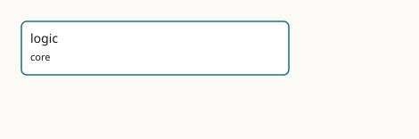

GMEOW Logic
- IRI: https://blackcatinformatics.ca/gmeow/slices/logic
- Tier: core
Group: core
What This Slice Covers
This slice owns 0 terms and contributes 0 mapping or projection rows. Use it when its terms match the native fact you want to preserve; use the linkage tables to see how those facts leave GMEOW for consumer vocabularies.
Consumers
- The reasoning layer and every projection consumer: the native
logic:solver is the reasoning authority, and OWL/Datalog/SHACL/Prolog/N3 reasoners consume generated views of it (Principle 17). Foundational by Principle 15: it serves every consumer by construction. Pre-implementation, its consumer is the design set indesign/.
Local Map

Guide
Logic — the logic: reasoning layer
Slice:
https://blackcatinformatics.ca/gmeow/slices/logic· tier: core The maximally expressive, RDF 1.2-native logic in which GMEOW's model is authored, and of which every prior formalism (OWL, RDFS, SHACL, Datalog, Prolog, N3, SPARQL, and the gUFO/BFO/DOLCE upper ontologies) is a generated lossy projection — Constitution Principle 17.
This slice is the home of GMEOW Logic (logic:). It is a deliberately minimal stub today: the
logic: vocabulary, rules, solver, and generators are minted with implementation. What exists now is
the normative design, the manifest (slice identity and tier), and a stub module that reserves the
logic: namespace without adding axioms to the reasoned core.
The design set
The design is split by genre into five documents under design/, so it can be
implemented against rather than only read:
| Document | Genre | Contents |
|---|---|---|
design/LOGIC.md |
manifesto | vision, doctrine, lineage, target architecture |
design/LOGIC-SEMANTICS.md |
formal semantics | the unified core, triple-term/assertion rules, semantic profiles, modality, worlds, decidability |
design/LOGIC-RUNTIME.md |
runtime | solver architecture, the Nemo–Prolog seam, graph versioning, generated artifacts, CLI |
design/LOGIC-MIGRATION.md |
rollout | the MVP ladder, adapter phases, gates, deprecations, the design risk register |
design/LOGIC-CONFORMANCE.md |
contract | the conformance corpus and the loss-ledger preservation contract |
design/LOGIC-REFERENCES.md |
appendix | external standards, theory, and engines cited — staged for the metadata/references.ttl ledger |
What it commits to
- The logic is canonical; OWL is a projection of it, not its ceiling.
logic:is RDF 1.2-native and Turing-complete by intent; decidability is a property of a projection or a declared profile, never a cap on what the canonical model may say. - The foundation is authored in
logic:(UFO⁺). gUFO is its primary generated down-projection; BFO, DOLCE, and SUMO are generated bridge views, not truth-preserving projections. The OntoUML discipline that lives in external lint becomes actual axioms, with the lints retained as projection-conformance tests. - Verified by construction. A slow, correct Python oracle and a fast Rust core (oxigraph + Nemo + an embedded Prolog, bound by PyO3/wasm — the model) must pass one shared, language-neutral conformance corpus identically (Principle 7).
Status
Pre-implementation. This slice currently declares no logic: terms; the stub keeps the reasoned core
unchanged. The vocabulary, generators, solver, conformance corpus, and the matching enforcement gates
in governance/constitution.ttl land together with the
implementation, as the amendment-in-the-open that Principle 17 describes. Until then, Principle 17 is
enforced by design-review practice and surfaces as a warning, never silently.